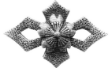

高高、高中、県女の校章について
高松中学校の校章

高中時代は、魚々子地（ななこじ:魚卵ように表面に細かい粒を密にみせる彫金の技法）に左右2本のベン、縦には2本のホコ、中央に桜花を配し「文武両道」を表しています。（参考:創立110周年記念誌）
高松高等女学校の校章

今も女子生徒の胸元を飾っている「雪持笹」は、明治34年(1901)にデザインされました。
この年、卒業生のために職員が寄せ書きをしたのですが、絵画教師の中川愛梅氏が描いた雪にたわむ竹の姿が、生徒の心に深い印象を与えました。校章の制定が叫ばれていたときでもあり、これを図案化、校章としたのが始まりです。
雪の白さは乙女の「純潔」を、また雪にたわむ笹の姿は「忍耐」を表しています。（参考:「玉翠44号」「創立110周年記念誌」）
高松高校男子の校章
高中時代は左右２本のベンとそれを貫くホコで、文武両道をかたどった校章でしたが、その形を変えて、三本のベンとその間に三本のホコ、中央に高松高校の「高」を配しています。小川誠一教諭の考案で、昭和23年から採用されています。（参考:「玉翠創立70周年記念特集号」）
校章の思い出
小川誠一（『玉翠 創立70周年記念特集号』より）
生徒達が常に誇りにしていたのは高中の校章である。校章の図を度々かかされるので、大小中の三つの原図をかいておいて、頼まれたらどれかを写して渡すことにしていた。
（中略）
終戦後、高中は高松高校に変わった。そこで校章も変えることになって私に一任された。
新しい校章を考案するのはなかなか難しい。何枚も書き、皆さんの意見も聞き、元の校章の感じも生かして、現在のができたのである。
（中略）
私が考案したあの校章は良くできたと思っている。いつまでもあの校章を輝かせてもらいたい。